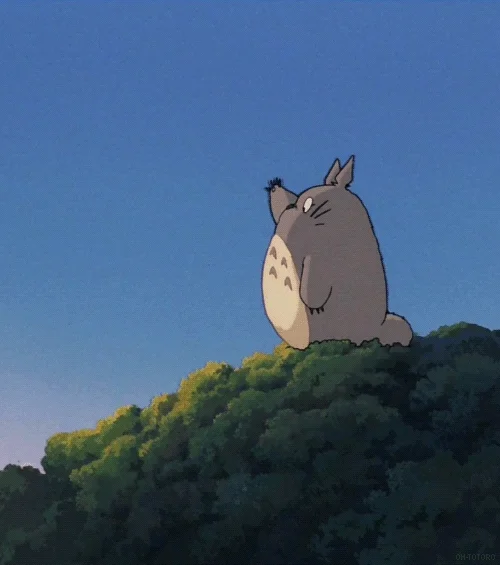

Studio Ghibli is Japanese animation studio based in Tokyo.
They have created many beloved films such as My Neighbor Totoro,
Howl's Moving Castle and The Secret World Of Arrietty. This website will
explore Studio Ghibli's history, music, animation style, and films. Continue reading
the main page for some key dates of the studio's history.
Click on the
hamburger button in the top left corner to see the sidebar menu.

MINI TIMELINE OF STUDIO GHIBLI
January 5, 1941: Birth of Hayao Miyazaki, cofounder of Studio Ghibli
June 15, 1985: Founding of Studio Ghibli
June 2, 1988: Release date of hit animation My Neighbor Totoro
April 2022: Studio Ghibli left Tokuma Shoten and became
an independant company
June 10, 2005: Release date of Howl's Moving Castle
February 17, 2010: Release date of Arrietty
(Known as The Secret World of Arrietty in North America)